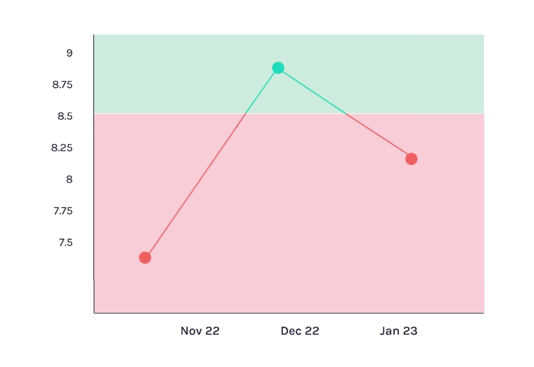

Votre résultat :
8,3 mg/dl
Valeur normale : 8,8 - 10,6 mg/dl

Le test calcium sérique
Le test calcium sérique mesure les formes libres et liées du calcium dans le sang. Des niveaux anormaux (trop élevés ou trop faibles) peuvent indiquer des troubles comme :
- Faible calcium : Problème d'absorption, maladies osseuses, rénales ou hépatiques.
- Calcium élevé : Favorisez les aliments riches en calcium (produits laitiers, légumes verts).
Amélioration de la santé : Favorisez les aliments riches en calcium (produits laitiers, légumes verts).
Consultez un médecin pour envisager des suppléments si nécessaire.